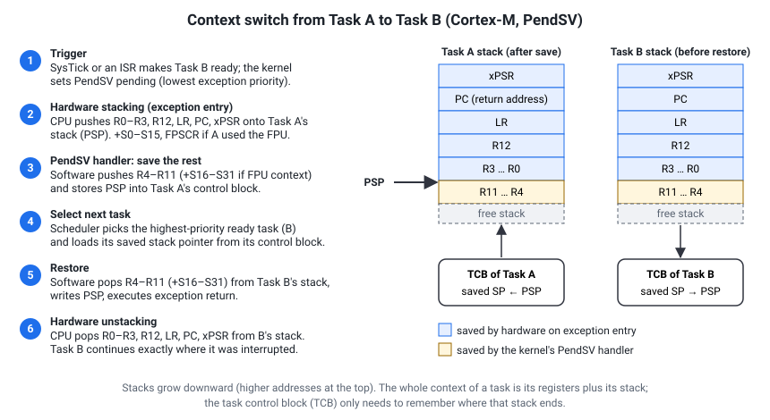

Context switching
A context switch is how one CPU appears to run many tasks. Knowing exactly what is saved, where, and when explains both the cost of multitasking and why shared data can be corrupted.
- Define a task's context and a context switch.
- Describe the sequence of a context switch on an Arm Cortex-M using PendSV.
- Explain why each task needs its own stack and what the stack must hold during a switch.
- Estimate context-switch overhead and the effect of the FPU on it.
- Explain why a context switch can happen between any two machine instructions, and why that makes unprotected shared data unsafe.
The concept
Context: the processor state a task needs in order to continue: the general-purpose registers, the program counter, the stack pointer, the status register and, if the task uses floating point, the FPU registers.
Context switch: saving the context of the running task and restoring the context of another task, so that the new task continues exactly where it previously stopped.
A task never notices a context switch. From its point of view, the instructions run one after another; it is just that, sometimes, real time passes between two of them. That gap is invisible to the task's own logic but very visible to any other task that touched the same data in the meantime.
Each task needs its own stack because the stack is most of the context: local variables, return addresses of every function on the call chain, and the saved registers all live there. The TCB only stores the saved stack pointer.
How it happens on Cortex-M
Cortex-M cores have features designed for an RTOS: two stack pointers (MSP for handler mode and the kernel, PSP for tasks), automatic register stacking on exception entry, and the PendSV exception. Kernels set PendSV to the lowest exception priority and perform the switch inside it. Any code, including an ISR, that makes a higher-priority task Ready just sets PendSV pending. PendSV then runs only after every other active interrupt has finished, so a context switch never delays an ISR.

Two details matter in practice:
- FPU context. If a task has used the FPU, the hardware frame grows from 8 to 26 words (S0–S15 and FPSCR are added) and the kernel saves 16 more words (S16–S31). Lazy stacking reserves the space but only writes the FPU registers if the handler itself uses the FPU, which keeps the common case fast.
- Interrupts use their own stack. ISRs run on MSP, so the nesting depth of interrupts is paid once on the interrupt stack, not on every task stack. Each task stack only needs room for one exception frame.
An interrupt is not a context switch
Entering an ISR saves registers too, but it is an exception entry, not a switch between tasks. When the ISR returns without making a higher-priority task Ready, the same task simply continues. A context switch happens only when the scheduler chooses a different task.
Why this matters for shared data
A context switch can occur between any two instructions of a preemptible task, because an interrupt can arrive at any time and can make a higher-priority task Ready. A single line of C is usually several instructions:
shared_count++; compiles to: LDR r0, [count] ; read
ADDS r0, r0, #1 ; modify
STR r0, [count] ; writeIf Task A is preempted after LDR and Task B increments the same counter, Task A then writes back its stale value plus one, and B's increment is lost. This is a race condition: the result depends on the timing of the switch. It is the motivating problem for all of Part II.
Worked example: what does switching cost?
Assume a measured switch cost of 200 CPU cycles (save, scheduler decision, restore; a realistic order of magnitude for a small RTOS, but always measure on your own build). At 216 MHz:
200 cycles ÷ 216 MHz ≈ 0.93 µs per switch
A design with a 1 kHz control task, a 2 kHz sensor task and assorted communication has about 6000 switches per second (each wake-up costs one switch in and one out):
6000 × 0.93 µs ≈ 5.6 ms per second ≈ 0.56 % CPU
Small, but not free. The same arithmetic at 100 kHz (a task per ADC sample) gives about 19 % of the CPU spent switching, which is why very high rates are handled in ISRs, DMA or batches, not by waking a task per event.
Common mistakes
- Assuming switches happen only at function calls or at "safe" points. In a preemptive kernel they happen between any two instructions.
- Assuming a single C statement is atomic. Read-modify-write sequences, 64-bit accesses on a 32-bit core, and bit-field updates are all several instructions.
- Using the FPU from several tasks without enabling FPU context saving. If the kernel does not save FPU registers, one task's floating-point state silently corrupts another's.
- Waking a task per tiny event. When the switch cost approaches the work done per wake-up, batch the events.
- Large local arrays in tasks. They live on the task stack, which must also hold the saved context. Overflow corrupts whatever memory lies below the stack.
What this becomes in Zephyr
- Zephyr's Cortex-M port performs the switch in PendSV exactly as described; threads run on PSP, ISRs on the interrupt stack (
CONFIG_ISR_STACK_SIZE, default 2048 bytes). - The STM32F769 has a double-precision FPU (FPv5-D16). Enable it with
CONFIG_FPU=y; if more than one thread uses floating point, also setCONFIG_FPU_SHARING=yso FPU registers are part of every thread's saved context. - To see and count switches:
CONFIG_THREAD_RUNTIME_STATSwithk_thread_runtime_stats_get(), orCONFIG_TRACINGwith a trace back-end such as SEGGER SystemView. - Atomic read-modify-write without locks: the
atomic_tAPI (atomic_inc(),atomic_cas(), …), covered again in Lesson 12.